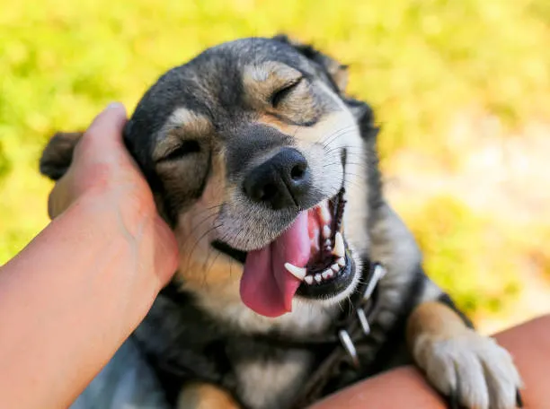

Soy Fabián Crisanto, me gusta mucho la tecnología y soy una persona amigable, responsable y con mucha actitud. Juego en la juvenil de Ciudad de Getafe y me encantan las computadoras.
Estoy aquí porque me gusta mucho el mundo de las computadoras y la programación. Algún día me gustaría ser una persona profesional y participar o trabajar en grandes empresas como Microsoft y otras más.